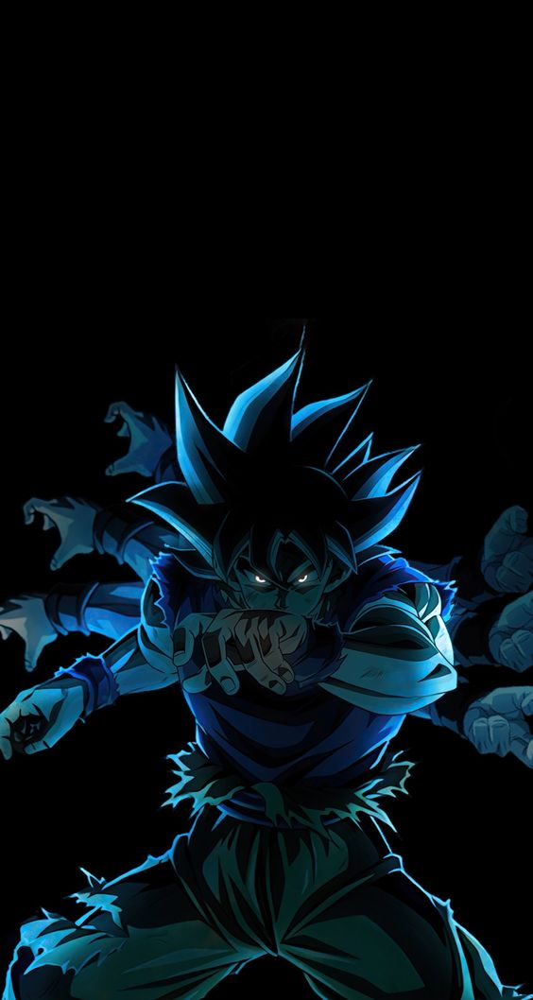

Angels are always in a "state" of Ultra Instinct,[8] though they can turn the ability on or off if they so choose.[9][10]
Contents
1 Overview
1.1 Appearance
1.2 Usage and Power
1.3 Limitations
2 Video Game Appearances
3 Trivia
4 Gallery
5 References
6 Site Navigation
Overview
Appearance
In the anime, when first assuming the Perfected Ultra Instinct, Goku is covered in a bright white sheen, while his features are painted black and blue, and his hairstyle appears similar to his Super Saiyan form.
UI Goku Tori art2
Toriyama's art of Perfected Ultra Instinct Goku.
This form is essentially identical to the initial state of Ultra Instinct Sign, albeit with the user's hair becoming silver in color. The hairstyle is slightly wilder and more solid than normal, having no loose strands. The eyes take on a more stern, defined shape, sporting silver-colored irises, and visible pupils. Also, in the manga, the user generally has a focused but calm expression.
In the anime, the user gains a complex silver and blue aura consisting of rippling, fire-like energy, complete with sparkling particles of a magenta color.[11]
In the manga, the user initially gains the complex silver and blue aura consisting of rippling, fire-like energy without the sparking particles of the magenta color. After the user achieves a more sharpened control over the state, the aura becomes non-present.
In the anime and games, the user's muscles remain virtually the same mass and definition, while in the manga, its initial state makes the user's musculature slimmed down like Super Saiyan God, but gets larger if the user has kept enough intense training; during the Galactic Patrol Prisoner Saga in the manga, Ultra Instinct Goku is noticeably more muscular than he was during the Tournament of Power.
Upon the user's first successful transformation into Perfected Ultra Instinct, a "shell" of black and bright white covers the body before crumbling away as the hair fades from glowing white to gray. A similar effect has been seen in Super Saiyan Blue. In the anime, the transformation's extreme energy rips away the user's clothing on their torso while in the manga, their clothing remains unaffected. In Toriyama's artwork and Super Dragon Ball Heroes (both the game and manga), the form possesses Goku's Super Saiyan God hair and eyes albeit silver.
In the anime, while dodging or evading, Goku's movements in this form leave afterimages. His voice also remains deeper and rougher like the incomplete previous state, though not as deep and far more calmer, unlike Super Saiyan 3 and Super Saiyan 4.
In the manga, Moro also achieves this transformation through copying Merus' angel powers. In this form, Moro's fur on his legs and back turned white instead of silver, while his facial stripes also turned white.
Usage and Power
In this state, Goku's power skyrockets far above what it was previously, making him the strongest he has ever been in history,[6] ranking among the most powerful entities in the multiverse.[12] It is also stated to surpass the power of Gods of Destruction.[13] In promotional material for the anime Goku (in either Ultra Instinct Sign's third usage or in this complete state), it is recognized by even Beerus to be possibly superior to him in power.[14]
The form increases the user's power by two or three times that of their previous strongest transformation.[15]
In the manga, after Perfected Super Saiyan Blue Vegeta's quick defeat at Beerus' hand, Whis notes that achieving this state would allow Vegeta to take on any foe, including Beerus. This form allows Goku to match full power Jiren, thanks to it exploiting openings in his guard - causing Jiren to refer to it as not being true strength like his own. Later, Merus comments that when Goku masters this ability, no enemy is able to overcome him in combat, making him essentially unbeatable. When fine-tuned enough, the state also naturally hardens the part of the body which is about to take a blow; this was displayed when Moro broke his hand trying to impale Goku in the chest.
In the manga, it is said that one must have complete emotional control to avoid disturbing the balance of the Ultra Instinct ability. In the anime, it is less apparent that there is such as risk, as Goku was able to use his anger to drastically increase his power during the battle against Jiren. However, it is possible that Goku used his rage without becoming consumed by it, or his sudden and near-death dropout of the form soon after was a direct consequence of channeling his emotions. In the manga, after having copied Merus, Moro also proved able to use Perfected Ultra Instinct whilst retaining his emotions.
Giant Goku
Ultra Instinct Goku's giant energy avatar overpowers Moro
In times of need, Goku has displayed the ability to create an even more powerful giant energy avatar. Goku first used this avatar against Moro, and then used it once more against Gas. It appears that Goku is unable to use this power at will and can only use it under special circumstances.
All Angels are naturally in a Perfected Ultra Instinct “state” but for them it isn’t a transformation. Whis first reveals the existence of this state and its ability to Goku and Vegeta when training them, prior to Frieza's Revenge.
The form is noted to have a godly divine status, with the ability to possess divine ki. In Dragon Ball Heroes, upon seeing Goku's Ultra Instinct Sign and Perfected Ultra Instinct forms, Hearts notes he possesses the "power of the gods".[16] The notion of Ultra Instinct's divine nature is further reinforced during Goku's battle with Moro, in which he required a massive amount of godly energy to maintain the form.
DXadSFfU8AAZpji
Perfected Ultra Instinct Goku cloaked in a black and white aura
In the anime, the intensity of Perfected Ultra Instinct Goku's power was so great that his shirt was completely shredded when it activated. In addition to this form's vast levels of power, it retains its strengthening effect on Goku's Saiyan Power ability, allowing his speed, power, general efficiency, and ki to increase as he continues to fight an equally or even more powerful opponent. Its most notable trait is that it grants Goku complete mastery over Ultra Instinct, making all of his moves automatic and able to both defend and counterattack with ease, without being hindered by the thoughts that previously made Goku's use of Ultra Instinct imperfect, as Goku had let go of all of his doubts and live in the moment to fully understand Whis' teachings; thus allowing him to access the full potential of his fighting ability. Despite being a form that acts on neutral impulse, it can still channel his rage to amplify its power to staggering new levels, as shown when Goku's initial stalemate against the limit-breaking Jiren became a crushing assault that quickly pummeled Jiren into submission after Goku was infuriated at Jiren's shameless attack on the spectators. He also displayed such vast ki control that he could calmly repel and contain any energy assault thrown at him.
In the manga, Goku commonly uses Telekinesis as part of his fighting style in this form, utilizing it similarly to his God Bind in order to restrict his enemy's movement.
Ultra Instinct Goku
Perfected Ultra Instinct Goku during his battle with Jiren
Once attaining Perfected Ultra Instinct, Goku was able to completely negate Jiren's Overheat Magnetron, as he caught the attack in his hand, crushed it into a smaller orb, then calmly disintegrated it by just flicking his hand. He was also able to dispel Jiren's Infinity Rush with a simple wave of his hand. He was so fast that he was even able to dodge Jiren's punch and counterattack simultaneously in one flowing movement with such speed, it was impossible to see what Goku actually did. When Jiren angrily charged at him, Goku calmly dodged the attack and then bombarded him again with a rapid flurry of punches, before knocking him down from the pillar, leaving all the grand deities in the universe in awe of his might, with all the Gods of Destruction standing up and even Beerus praising and showing envy at Goku for his newfound power and completion of Ultra Instinct.
Upon facing a fully-powered Jiren, Goku was able to move so fast that not only did he leave a cut on Jiren's cheek, but also produced delayed shockwaves from the sheer force of his speed. During the battle, Goku calmly dominated Jiren, as he effortlessly blocked, dodged, and countered all of Jiren's attacks, along with being able to effortlessly blast through Jiren's Colossal Slash with his own Energy Blast, and swiftly pummeled him to the point of leaving the Pride Trooper visibly injured and tired.
When Jiren unlocked his Super Full Power and prepared to fight back, Goku was still able to fight on par against him in hand-to-hand combat. However, Goku became somewhat overwhelmed by Jiren's raw power as the battle progressed, as he was sent flying when Jiren used his energy, upon blocking Jiren's punch and getting injured by a Omegaheat Magnetron, which overpowered his Supreme Kamehameha. Despite this, Goku was able to quickly recover without being hindered at all by the damage he sustained and faced Jiren once again, but with even greater speed and power than before, as he continuously either evaded or blocked most of Jiren's assaults, and after a long standstill, eventually landed blows so powerful that he left Jiren temporarily unable to fight.
UI Goku manga
Goku achieves Perfected Ultra Instinct in the manga
After deflecting Jiren's Power Impact when he attacked Goku's friends, Goku's rage increased the power of his Perfected Ultra Instinct form even further. From then on, Goku was able to decisively overpower Jiren, landing solid blows and effectively evading and countering all of Jiren's attacks, such as his multiple Power Impacts, Infinity Rushes, and rapid punches before finally blasting him away with a Supreme Kamehameha and leaving him weakened in a crater, causing the mighty Pride Trooper to admit defeat.
As Goku prepared to finish Jiren off, the great power of Ultra Instinct took a toll on Goku, causing his body to endure tremendous pain and revert him to his base form.
In the manga, Goku achieves this form after maintaining great calmness over his own heart and mind's emotions when Jiren starts using a lot of his power. In this state, Goku easily outmaneuvers and overwhelms the non-fully-powered Jiren; however, when Jiren powers up to his maximum, the two battle evenly, with Goku's Ultra Instinct form eventually wearing out and putting him at a disadvantage until Vegeta comes to assist him.
Ultra Instinct Moro
Moro assumes Perfected Ultra Instinct after copying Merus' ability
When Goku trains with Merus to obtain control over the form, Merus surmises that Goku initially obtained the form in an extreme crisis or a matter of life and death, and concludes the quickest way of achieving it is to replicate those conditions. Merus then goes on to explain that Ultra Instinct will activate when the user achieves self-control in the face of a jarring shock to their emotions.
During the climax of the final battle against Moro on Earth, Merus tells Goku that, thanks to the training he spent with the angel, he is one step closer to mastering the Perfected Ultra Instinct state. Once he is inspired by Merus' sacrifice and manages to gain full control of his emotions in the midst of the aftermath, Goku manages to activate the state at will to the point of being able to shake the entire planet with the perfected power achieved through his conscious domain of the transformation. He was then able to overpower Moro in such a way that his power had been praised by Beerus as having at last achieved the style of the gods. Even when a fully-healed Moro lunged at Goku to thrust his arm through him, Goku's Perfected Ultra Instinct was so honed that his body automatically grew sturdier as necessary to the point where Moro broke his own hand on Goku's pectoral with the Saiyan not budging.
Upon copying Merus' abilities, Moro achieved the Perfected Ultra Instinct state himself, which even completely shattered his gem off his forehead. With this new power, Moro proved a mostly even match for Perfected Ultra Instinct Goku, even managing to land a blow on him, thanks to his magic. But after a well-placed dropkick to the back by the more experienced and trained Saiyan, the Angel power proved too much for Moro's untrained body and he quickly began to mutate.
DBS Chapter 68 03
Goku transforms to face Whis
On Beerus' Planet, Goku activates Perfected Ultra Instinct in order to spar with Whis; however, he is easily overcome by Whis' superior usage of the state.
While fighting Granolah, Goku is overpowered in his various forms, even while combining the principles of Ultra Instinct with Super Saiyan God and Super Saiyan Blue. Because of this, Goku activates Perfected Ultra Instinct, allowing him to overpower Granolah and resulting in him having no openings for the Cerealian to strike. Though he is initially holding his own, Goku's accuracy with Ultra Instinct drops during the fight, until he is once again open to attack from Granolah, causing him to drop back to his base form.
Goku reactivated the form alongside Ultra Ego Vegeta to fight Gas together, but the Heeter was still able to overpower the Ultra duo. While he initially continues the fight in this form, Goku then chose to use Ultra Instinct Sign instead, letting him worry about his emotions less and overpower Gas in turn. This allowed Goku to overwhelm Gas and overpower the empowered Heeter.
In the Dragon Ball Heroes manga, Goku took the form when Xeno Vegito was in trouble because of Super Saiyan 3 Cumber and proceeded to take Xeno Vegito's place in fighting, though he and Cumber never finished their battle as the Prison Planet was destroyed, with the last seen moments of their clash being an evenly matched beam struggle.
SDBH15-6
Perfected Ultra Instinct Goku in Super Dragon Ball Heroes.
In the Dragon Ball Heroes anime, Goku took the form when Xeno Goku and Xeno Vegeta were about to be mowed down by Cumber's Désastre Eraser. He nullified the attack and proceeded to batter down the ancient Saiyan, much to his counterpart's awe. After firing a Supreme Kamehameha that took Cumber out from the count, Goku reverts to his base form, emerging seemingly unscathed and fine from Perfected Ultra Instinct's limitations. A similar occurrence took place later on, Goku re-enters the form again when fighting against Kamioren in their Ultimate form and after firing a Kamehameha and following up with a punch that shattered the merged Machine Mutant to pieces, Goku reverts to his base form exhausted. Goku afterward seemed to believe that using Ultra Instinct he could have stood up to Hearts in his Ultimate Godslayer form, but seeing as he didn't know when he would be able to use it again, he opted to fuse with Vegeta instead.
Later, when it is revealed that Goku has still not mastered Perfected Ultra Instinct, alongside Vegeta having not mastered his new form, the two enter the mock Hyperbolic Time Chamber to master their powers respectively. They emerge, Goku in his Perfected Ultra Instinct state and Vegeta in his Controlled Berserk Super Saiyan Blue state to face against the Crimson-Masked Saiyan in his Super Saiyan Rosé 3 state. Perfected Ultra Instinct Goku has the upper hand against Crimson, until he drops from the form due to the forms time limit.
Limitations
In spite of the form's incredible abilities, using this form properly is difficult. This form has a drawback of costing a great deal of stamina, making each exertion very stressful; though it is noted by Whis and Belmod that this problem can be overcome with proper training, making it impractical for users after just obtaining it. Moreover, Goku apparently attained Perfected Ultra Instinct purely by accident, as the next time he discussed it with Vegeta, Goku replied that he is unable to tap into its power at will, meaning that the form can only appear if Goku is in extreme danger.
Vlcsnap-2018-03-18-08h36m58s10
Goku enduring the intense pain.
Dragon-Ball-Super-Episode-130-Goku-Ultra-Instinct-Jiren-0213
Blood erupts from Goku's body from over-exceeding his limits.
In the anime, similar to the reckless over-usage of Kaio-ken, upon first usage, the user can only sustain the form for a short time before their body breaks down. The end of this time limit is shown with a lot of blood rupturing from the user's body, as well as dark-black ki with purple electrical shocks that will cause severe pain and eventually force them into unconsciousness. Whis also noted it could potentially kill the user. As a result of this Goku was also exhausted following the form's usage. In the Dragon Ball Heroes anime it is shown that even upon mastery the form still has a strict time limit, and the user will drop out of the form suddenly upon this running out - though without the prior damage to ones body, as shown when Goku dropped from the form after only a short while into his fight with the Crimson-Masked Saiyan.
UI Goku defends against Jiren
Goku's body struggles to keep up with Jiren's onslaught.
In the manga, the form's automatic reaction can be a burden if it has to try and react to an extraordinarily powerful foe, because the user will be forced to react without rest.[17]
Using the Perfected Ultra Instinct requires proper control of one's emotions after a sudden emotional shock. Through training, Goku developed the ability to utilize the Ultra Instinct Sign at will. Merus points out that at that point Goku was just one step away from achieving the full form and when he does he will be able to access it whenever he wants, and thanks to having become stronger, he will be able to keep it stable.
However the user need to always have a calm mind and be emotionless in order to use it to its full efficiency is a major flaw for Goku, resulting in him having a hard time using the technique to its fullest. Notably on occasions where Goku has been caught off guard in this state Goku had dropped his calm emotionless state, such as his surprise at Moro attacking him when he thought the illusion he was following was real,[18] or when he was confused as to what was going on with Granolah suddenly disappearing.[19] This was one reason that Goku opted to use the Sign form to take on Gas, due to him being able to put his emotions to work and focus less on maintaining a calm mind and heart. With Merus' copied abilities however, Moro proved able to effectively utilize Perfected Ultra Instinct while retaining his emotions and without needing to keep a calm mind.
Moro Fat
Moro's body can't handle the Perfected Ultra Instinct state
Through Seven-Three’s copy ability, Moro had acquired Perfected Ultra Instinct via Merus. However, due to not undergoing the proper training, Moro’s body could not withstand the power, causing him to negatively mutate. Even after having fused with the Earth, Merus' Ultra Instinct power combined with the large quantities of energy he was consuming overwhelmed Moro's mind.
Even when the form has been achieved, it is still not at its full potential, as its precision can still be increased further, and as such an entity with higher Ultra Instinct precision will have the edge over a foe with a lesser amount.[8]
Granolah Vital Point
Granolah lands an attack on Goku when his Ultra Instinct's accuracy decreases
According to Whis, even once a mortal user of Perfected Ultra Instinct has mastered being able to enter the state, there is still a time limit which decreases their stamina, and they must further train to get past this impediment. Furthermore, during his battle with Granolah on the planet Cereal, although Goku initially held the edge over the Cerealian and had no openings for him to exploit, the accuracy of his Ultra Instinct decreased overtime - in part due to Goku's confusion - which resulted in Granolah managing to find an opening and strike him down.
Video Game Appearances
Dragon Ball Xenoverse 2
Super Dragon Ball Heroes
Dragon Ball Z: Dokkan Battle
Dragon Ball FighterZ
Super Dragon Ball Heroes: World Mission
Dragon Ball Z: Kakarot
Dragon Ball Legends
Fortnite
DBXV2 Extra Pack 2 DLC Saiyan Future Warrior VS Ultra Instinct Goku's Dodge (Autonomous Ultra Instinct Sonic Sway)
Ultra Instinct Goku automatically dodging the Future Warrior's punch in Xenoverse 2.
In Xenoverse 2, Perfected Ultra Instinct Goku appears as part of the Extra Pack 2 DLC though the form is simply referred as Ultra Instinct. His voice also has an echo added to it in this form. Ultra Instinct Goku also has a Dodge effect that allows him to automatically dodge certain attacks though this effect costs stamina. From a gameplay standpoint, Ultra Instinct Goku's Dodge effect is identical to the similar effect utilized by certain Supervillain empowered bosses in Expert Missions and users of the Data Input skill which is the only way for the Future Warrior to utilize said effect as Dodge itself is not a traditional skill. During the DLC 11 update, Ultra Instinct Goku gets a new variation of the Kamehameha called Divine Kamehameha as another skill set variation. Additionally in certain parallel quests, Whis gains the same Dodge effect as Ultra Instinct Goku acting as a non-playable in-game representation of his Ultra Instinct state.
UM1-17
Perfected Ultra Instinct Goku card for Super Dragon Ball Heroes.
In Super Dragon Ball Heroes Universe Mission 5, Goku regained the state after having been beaten down by Super Saiyan 3 Cumber, and eventually defeated him with it.
In Dokkan Battle, Ultra Instinct appears as a transformation and the standard form for several Goku units first appearing as the transformed state of Transdimensional Instinct Goku (Ultra Instinct -Sign-), acting as a more powerful-yet-frailer "glass cannon" until his Extreme Z-Awakening eliminated this weakness. It is also featured in Surprising Even the Gods Goku (Ultra Instinct) and True Instinct Goku (Ultra Instinct) as the standard form.
In FighterZ, Ultra Instinct Goku appears as part of its Season 3 DLC.[20]
Whis UI Kakarot
Whis' Ultra Instinct state in Kakarot.
In Kakarot, Whis will not normally use Ultra Instinct, and will instead briefly take on this form during training sessions in order to temporarily utilize it.
Ultra Instinct Goku (DBL47-01S)'s Character Illustration.
Ultra Instinct Goku (DBL47-01S)'s Character Illustration.
1/4
In Legends, RED Legends Limited Ultra Instinct Goku (DBL47-01S) makes his annual debut as a Legends Limited unit and the game's main headliner for its 4th Year Anniversary Celebration. It also appears in a cutscene at the end of a special Story Event for Legends' 4th Anniversary, entitled as "The Greatest Showdown! A Transcendant Limit Break!" and the game's Title Screen.
Trivia
Perfected Ultra Instinct was designed by Akira Toriyama, but it underwent several changes in the anime and video game versions. The hair spikes are more sluggish; which is more similar to Ultra Instinct Sign while the original design closely resembles Super Saiyan God.[21]
The idea of silver hair may have come from the fact that Akira Toriyama originally wanted Super Saiyan Blue to have white hair. However, he decided against it because it would clash with "the next villain" (at the time this was stated, the Universe 6 Saga was ongoing).
UI Cameo Bro
Goku appears to be in Perfected Ultra Instinct for a moment.
In Dragon Ball Super: Broly, when transforming from Super Saiyan God to Super Saiyan Blue to fight Broly, Goku's hair momentarily shifts into a color resembling that of Perfected Ultra Instinct, though his hairstyle remains similar to that of the regular Super Saiyan and Super Saiyan Blue forms. Thus, it has been debated whether or not Goku had briefly tapped into Perfected Ultra Instinct before eventually transforming into his Blue form.
Unlike the incomplete state, Goku loses his dual-voice when he grunts, yells or screams in the original Japanese version, while in the Funimation dub, he retains it. The former version even applies this in the Super Dragon Ball Heroes promotional anime.